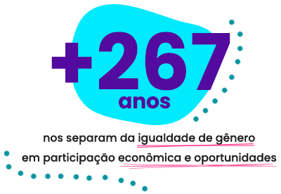
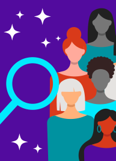

Não queremos ir para o spam! =( selecione este email como “confiável” ou mova-o para a Caixa de
Entrada.

Por que lutar pela igualdade de gênero AGORA?
Embora o maior gap de gênero apontado pelo
Global Gender Gap Report 2021
esteja relacionado à participação das mulheres na polÃtica,
participação na economia e oportunidades são os campos que levarão mais tempo
para se tornarem igualitários em todo o mundo: exatamente 267,5 anos se
continuarmos no ritmo atual.
Segundo o relatório, divulgado no final de março pelo
Fórum Econômico Mundial, essa demora está ligada a duas
tendências opostas – ao mesmo tempo em que a proporção de mulheres qualificadas continua
aumentando e a disparidade salarial lentamente diminui, as desigualdades de renda ainda estão a
apenas meio caminho de serem superadas, e mulheres representam só 27% dos cargos de
liderança.Â
Outros dados do report...Â
Efeitos atuais de um problema antigo: o fechamento das escolas e disponibilidade
limitada de serviços aumentou estresse, ansiedade, insegurança no trabalho e dificuldade de
equilibrar vida profissional e familiar entre mulheres com filhos. A dupla jornada, já
experimentada pelas mulheres, se acentuou ainda mais com a pandemia, escancarando seu efeito
prejudicial nas carreiras femininas. Â
Segregação ocupacional: Entre as 8 áreas consideradas como os “empregos do
amanhã”, apenas duas alcançaram a paridade de gênero (Pessoas e Cultura e Produção de Conteúdo), e
todos as outras têm a ver com tecnologia. Na
Computação em Nuvem, mulheres representam 14% da força de trabalho; em
Engenharia, 20%; e em Dados e IA, 32%. Esses números não vêm
melhorando significativamente.
Na Microsoft, acreditamos que a tecnologia e a Inteligência Artificial
têm um enorme potencial para se
tornarem os principais impulsionadores da recuperação e desenvolvimento social e econômico do Brasil, e
estas são ferramentas poderosas para ampliarmos a participação de mulheres no mercado de trabalho, na
liderança das empresas e na fundação de startups.
Cursos gratuitos da Microsoft para apoiar mulheres a seguirem carreira em tecnologia:
Programa de Capacitação de Mulheres Empreendedoras, em parceria com a
International Finance
Corporation (IFC), membro do Grupo Banco Mundial, e apoio da WE Impact e da WE
Ventures. O próximo workhsop será no dia 5 de maio.
Nossa busca por uma DevWeb e o
conceito de ações afirmativas

No ano passado, abrimos na WE Impact uma vaga para Desenvolvedora Web e fomos surpreendidas com quase
300 currÃculos, muitos deles acompanhados de relatos sobre como o foco em mulheres animou as candidatas
a participarem do processo. Depois de mais entrevistas do que imaginávamos, demos as boas vindas Ã
Raissa, que hoje atua na nossa área Digital.
Agimos com base no conceito de “ações afirmativas”, que buscam diminuir desigualdades por meio da oferta
de oportunidades focadas em grupos social e economicamente desfavorecidos, seja por meio do
estabelecimento de cotas, metas de participação ou outros tipos de incentivo.
Lembra do programa de trainee para negros lançado pela Magazine Luiza em 2020? Alvo de polêmicas, a ação
afirmativa buscava aumentar a participação quase nula de negros em cargos de liderança na varejista.
O que aprendemos com esses dois exemplos? Muitas vezes, para encontrar profissionais mais diversos,
basta procurá-los.
Durante o mês da mulher, a
Mobees, pioneira em mÃdia exterior
digital sobre carros de aplicativos, lançou a
campanha ‘Elas que movem’ para movimentar o empreendedorismo feminino!
Convocando empresas que apoiam a luta feminina por oportunidades e representatividade nesse mercado, a
startup, cofundada pela Flávia Coelho (CMO), prometeu reverter 30% das suas vendas de março em divulgação
gratuita de negócios locais liderados por mulheres.